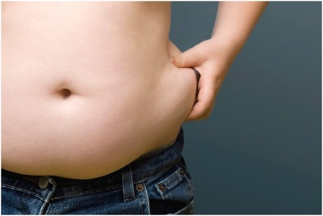

Mỡ thừa – “vị khách không mời” của phái đẹp
Không chỉ gây ảnh hưởng đến vóc dáng của phái đẹp, những ngấn mỡ thừa “đáng ghét” còn khiến các chị em mất tự tin và tiềm ẩn nhiều nguy cơ về sức khỏe. “Kẻ thù” không muốn… đội trời chungDù muốn hay không thì phụ nữ đều có xu hướng tích lũy mỡ thừa ở hai bên hông, đùi, cánh tay và bụng theo thời gian. Quá trình lão hóa, mang thai, sinh nở, chế độ dinh dưỡng không hợp lý, vận động ít… đều là những nguyên nhân khiến lượng mỡ thừa tích tụ trong cơ thể, dẫn đến tình trạng “phát tướng” ở phái đẹp.
 Mỡ thừa được xem là kẻ thù không đội trời chung của phái đẹpViệc đối mặt với vòng eo “bánh mì” quá khổ, không còn thon gọn khiến các chị em lo lắng, muộn phiền nhất là các chị em làm việc ở văn phòng, phụ nữ sau sinh, bước vào độ tuổi tiền mãn kinh… Ngoài việc cảm thấy thiếu tự tin khi diện những bộ trang phục ôm sát cơ thể, bụng ngấn mỡ, cùng tình trạng tích tụ mỡ thừa ở eo, bụng dưới, cánh tay, đùi… còn tiềm ẩn các nguy cơ mắc bệnh về tim mạch, tiểu đường, huyết áp, xương khớp, thậm chí là bệnh phụ khoa. Bên cạnh đó, một cơ thể không cân đối, đồ sộ còn ảnh hưởng đến đời sống tình dục của phụ nữ.
Xóa tan nỗi ám ảnh mỡ thừa bằng cách nào?Với đa số chj em, làm cách nào để loại bỏ “vị khách không mời” – mỡ thừa luôn là mối quan tâm hàng đầu. Song việc loại bỏ mỡ thừa thì lại không hề đơn giản vì mỡ thừa như một kho năng lượng dự trữ, chỉ khi cơ thể “báo động” thì kho năng lượng dự trữ này mới mở để đối phó lại với tình huống. Do vậy, các phương pháp như nhịn ăn, uống thuốc giảm cân, tập luyện thể thao… thường được áp dụng nhưng lại đòi hỏi sự kiên trì, bền bỉ lâu năm để có hiệu quả mà không phải ai cũng thực hiện được.
 Các phương pháp như ăn kiêng, tập thể dục thường mang đến hiệu quả chậm và không đảm bảo an toàn cho sức khỏe.
Các phương pháp như ăn kiêng, tập thể dục thường mang đến hiệu quả chậm và không đảm bảo an toàn cho sức khỏe.
Một sự lựa chọn khác nhanh chóng hơn bạn có thể tìm đến giải pháp loại bỏ mỡ thừa bằng công nghệ cao. Một trong những công nghệ được các chuyên gia thẩm mỹ đánh giá cao hiện nay là phương pháp hút mỡ thừa bằng Vaser Lipo.
Với ưu điểm an toàn, thân thiện, hiệu quả giảm mỡ đúng nơi, đúng chỗ, hút mỡ thừa Vaser Lipo nhanh chóng ghi điểm với các chị em phụ nữ kể từ khi xuất hiện tại Việt Nam.